pas l’encombrer."
Ce qu’un utilisateur nous a dit. C’est devenu le brief.
Muslim Guide avait de bonnes bases : horaires de prière, Qibla, Coran, tafsir, mosquées à proximité. Mais l’application n’avait aucune stratégie de design claire, un style visuel daté, et un parcours qui transformait de simples rituels quotidiens en corvée.
L’objectif : une expérience simple, claire et moderne pour les non-arabophones, les nouveaux convertis, les actifs pressés comme les plus âgés.
Un contenu utile. Une interface qui gênait.
repérés écran par écran.
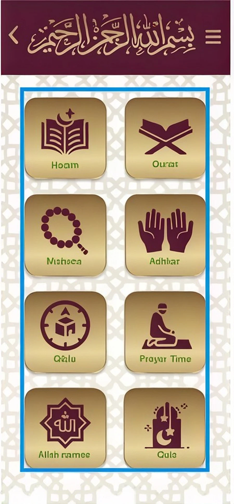
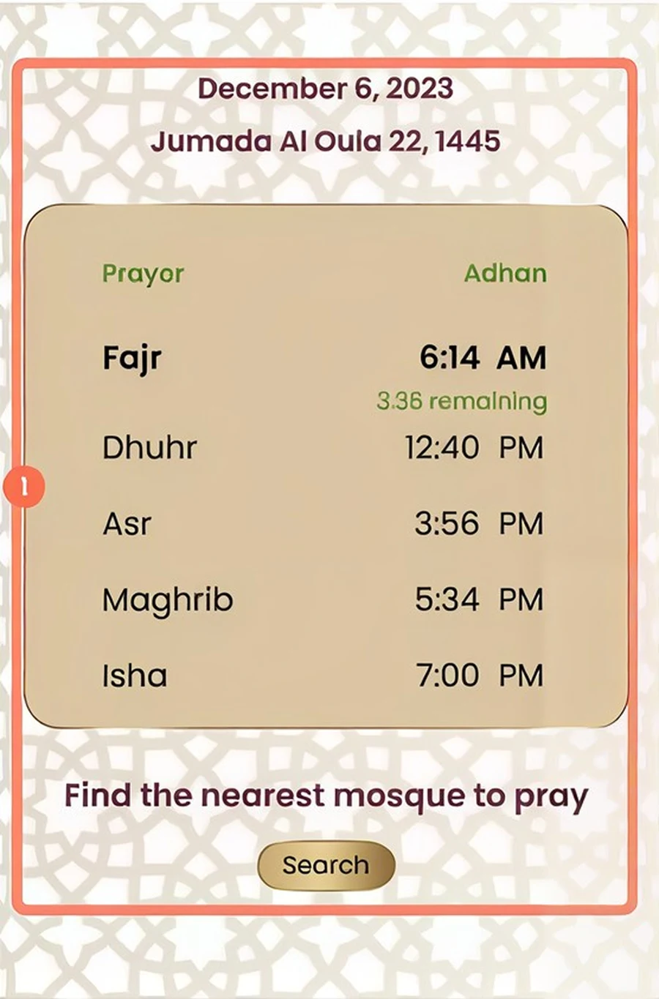
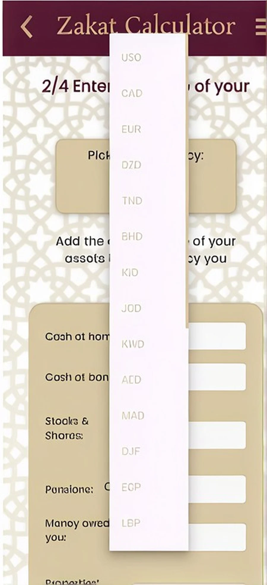
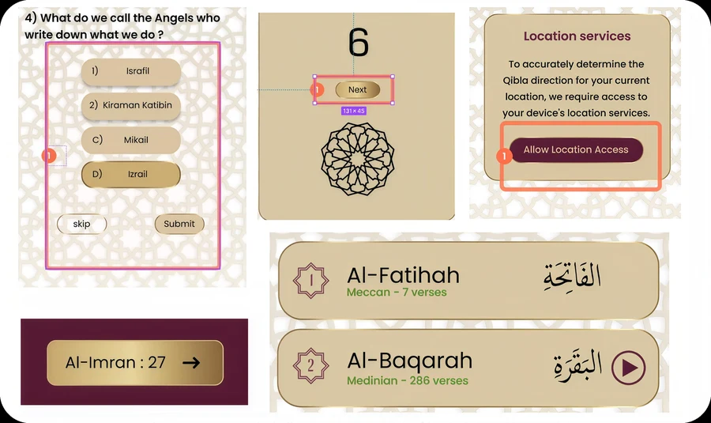
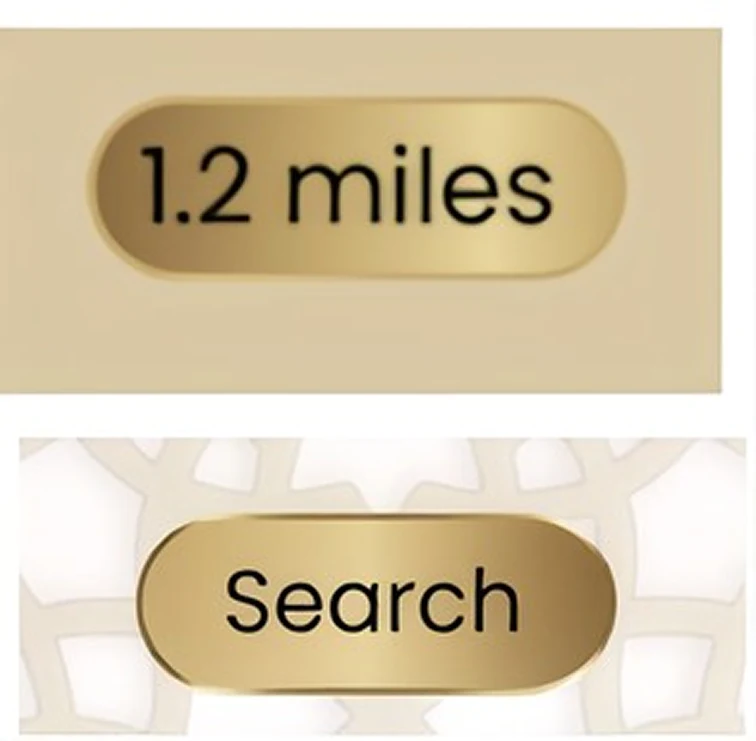
chaque jour ?
Entretiens, questionnaire, focus group et tests d’utilisabilité avec de vrais utilisateurs.
Un compagnon quotidien apaisant.
un compagnon quotidien apaisant.
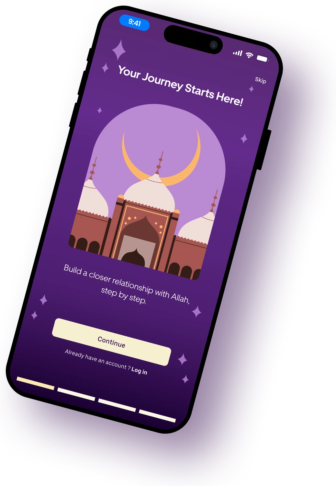
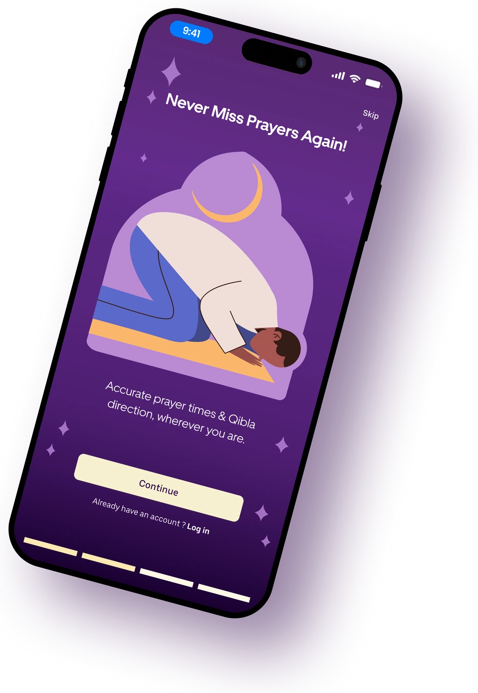
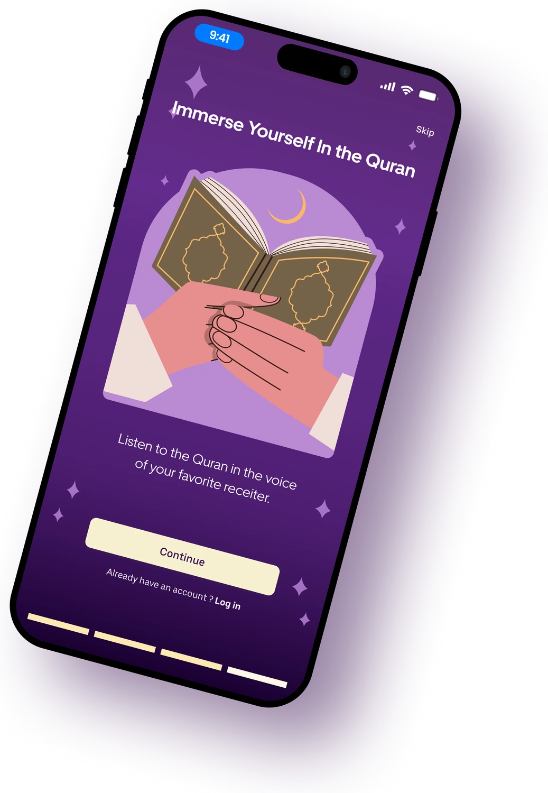
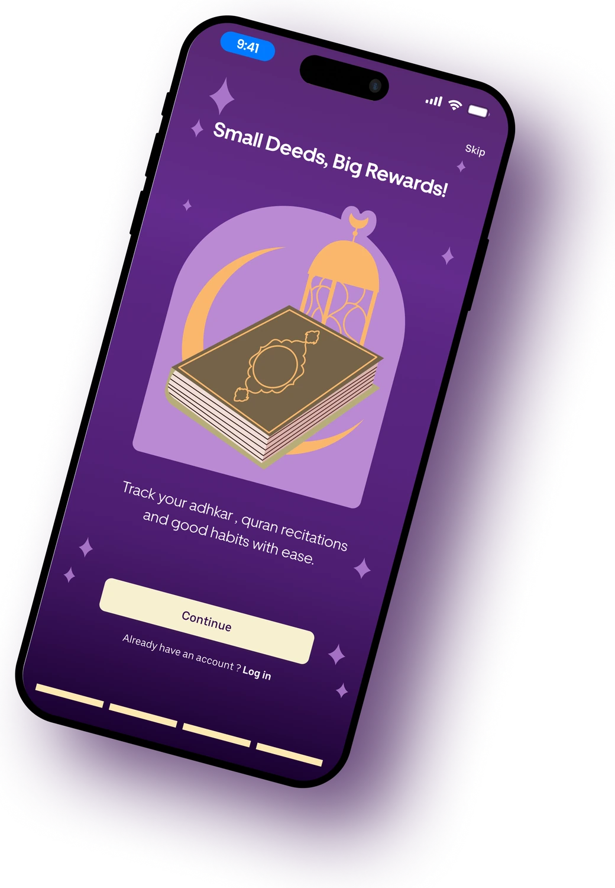
Onboarding guidé
Quatre étapes illustrées présentent les prières, le Coran, les habitudes et le chemin à venir.
Pourquoi c’est importantLena se sentait dépassée. Un accueil calme, pas à pas, montre aux nouveaux musulmans par où commencer.
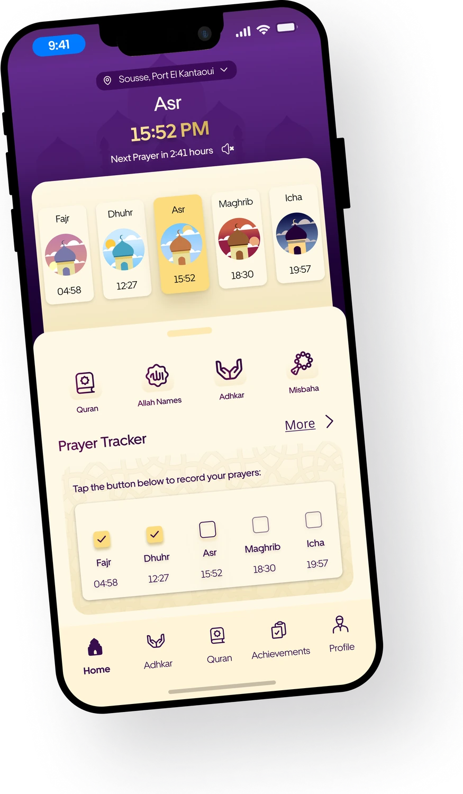
Les prières d’abord
La prochaine prière et son compte à rebours ouvrent l’appli, avec un suivi des prières en un geste juste en dessous.
Pourquoi c’est importantMohamed Ali voulait juste les horaires et la Qibla rapidement. C’est désormais la première chose qu’il voit.
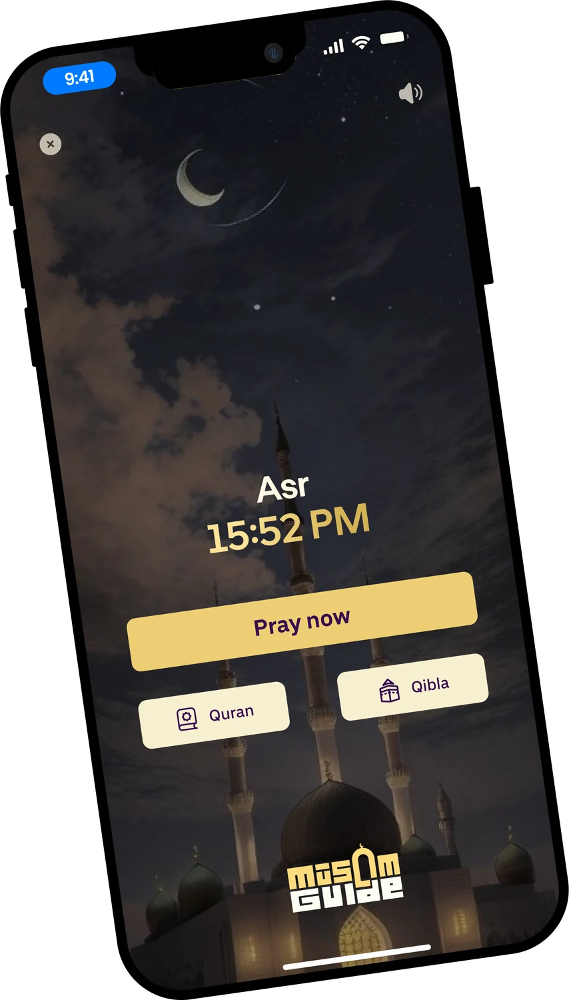
Un rappel de prière tout en douceur
À l’heure de la prière, un seul écran : prier, ouvrir le Coran ou trouver la Qibla.
Pourquoi c’est importantTransforme une notification en action, au moment exact où elle compte.
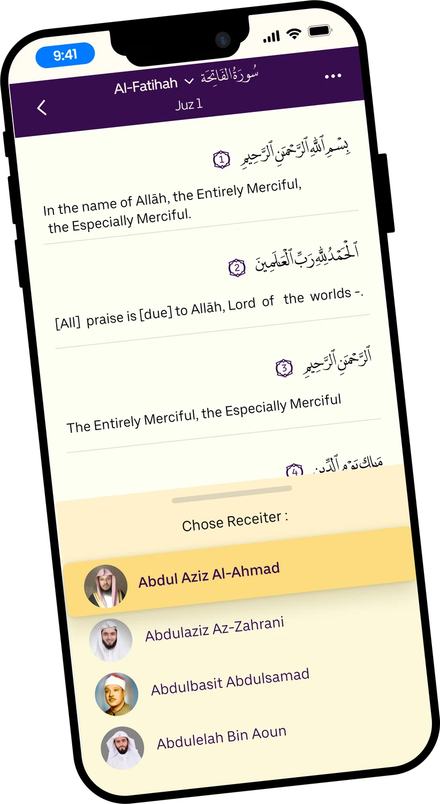
Le Coran avec votre récitateur
Arabe, traduction et choix du récitateur sur la même page.
Pourquoi c’est importantLes non-arabophones peuvent lire, comprendre et écouter sans changer d’appli.
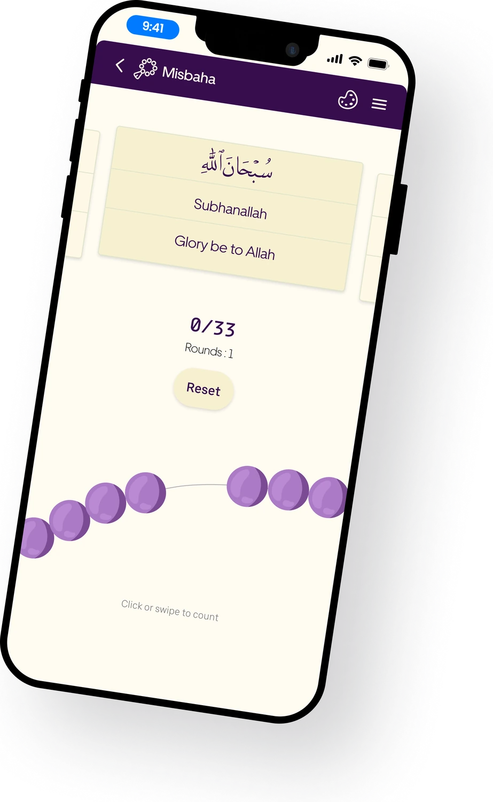
Misbaha numérique
Faites glisser les perles pour compter le dhikr, avec tours et remise à zéro.
Pourquoi c’est importantUn rituel familier rendu tactile, comme un vrai chapelet et non un compteur.
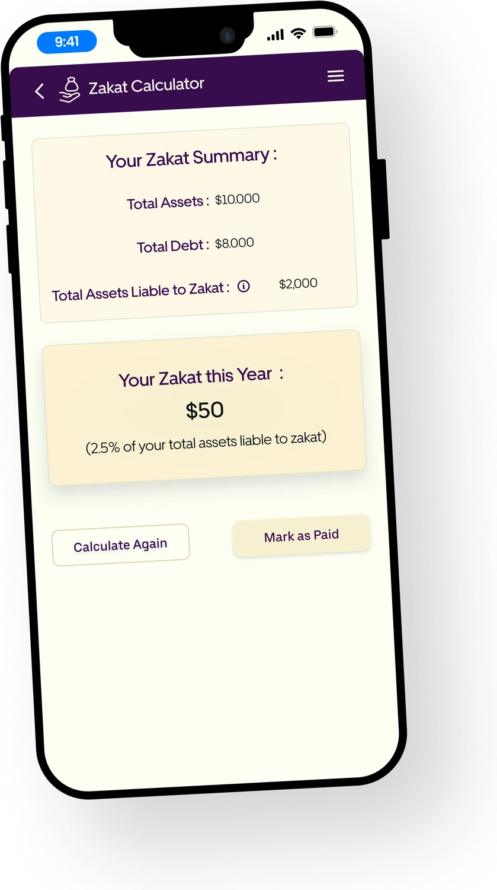
Calculateur de Zakat
Avoirs, dettes et les 2,5 % dus, résumés dans une seule carte claire.
Pourquoi c’est importantUn calcul annuel déroutant devient une réponse unique et fiable.
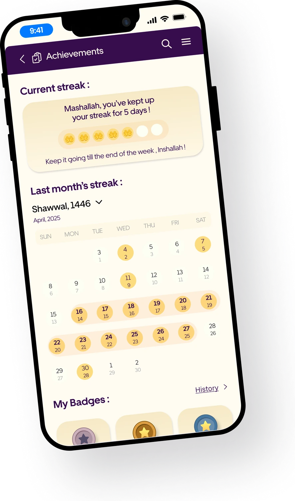
Séries et badges
Une série hebdomadaire, une vue mensuelle et des badges à débloquer.
Pourquoi c’est importantLe suivi d’habitudes que réclamaient les utilisateurs : une régularité visible.
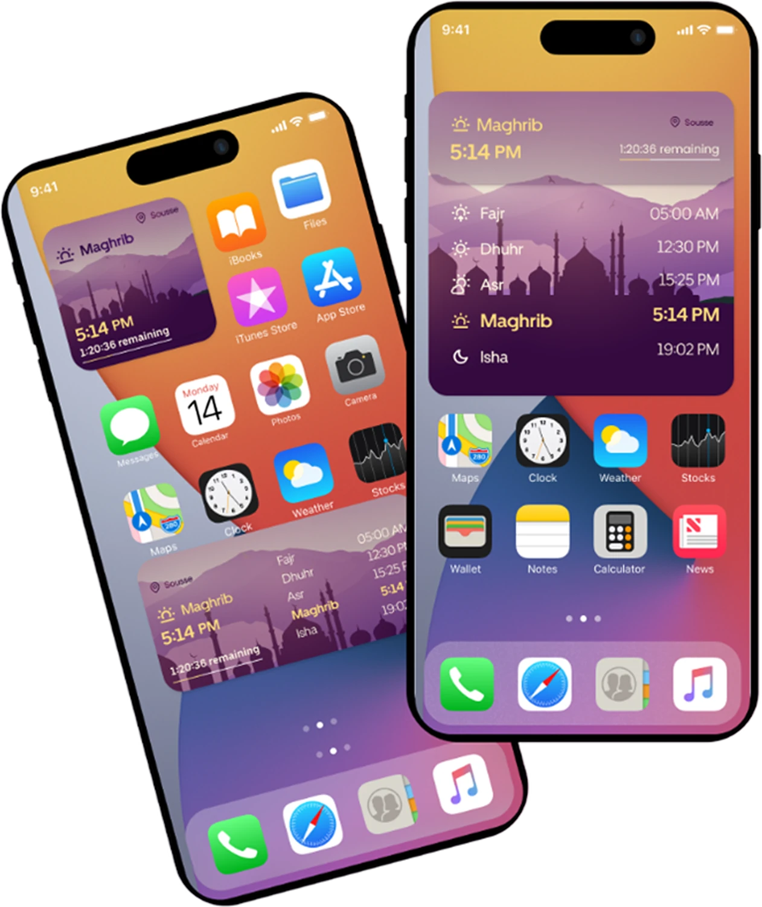
Widgets d’écran d’accueil
La prochaine prière et toute la journée sur l’écran d’accueil.
Pourquoi c’est importantLes informations les plus utilisées, sans même ouvrir l’appli.
en mouvement.
Désormais, un compagnon apaisant.
Une refonte haute fidélité avec un guide de style complet, un onboarding guidé et des fonctions fondées sur les vraies demandes des utilisateurs.
La leçon : dans un produit qu’on ouvre cinq fois par jour, la sobriété est une fonctionnalité.